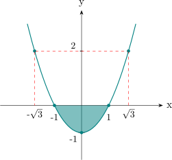

1.3 Functions
Definition 1.3.1. Let \(X\) and \(Y\) be non-empty sets. A function \(f:X\longrightarrow Y\) is a rule which assigns to every
member of \(X\) a unique member of \(Y\).
Definition 1.3.2. Let \(X\) and \(Y\) be non-empty sets and \(f:X\longrightarrow Y\) a function. Also let \(A\subset X\) and \(B\subset Y\)
- 1.
- The image of \(A\) under \(f\) is the set \(f(A)=\{f(a):a\in A\}\).
- 2.
- The inverse image of \(B\) under \(f\) is the set \(f^{-1}(B)=\{a\in X:f(a)\in B\}\).
Example 1.3.3. Given the function \(f:\mathbb {R}\longrightarrow \mathbb {R}\) defined by \(f(x)=x^2-1\), find \(f(A)\) and \(f^{-1}(B)\), where \(A=[-1,1]\) and \(B=(0,2)\)
Solution.

On \([-1,1]\) the smallest value of \(x^2-1\) is \(-1\), at \(x=0\), and the largest is \(0\), at \(x=\pm 1\); the function is continuous, so it takes every value in between. Hence \begin {align*} f([-1,1]) &=\{f(x):x\in [-1,1]\}\\ &=\{x^2-1:x\in [-1,1]\}\\ &=[-1,0]. \end {align*}
For the inverse image, \(x^2-1\in (0,2)\) means \(1<x^2<3\), that is \(1<|x|<\sqrt {3}\): \begin {align*} f^{-1}\big ((0,2)\big ) &=\{x:f(x)\in (0,2)\}\\ &=\{x:x^2-1\in (0,2)\}\\ &=\{x:1<|x|<\sqrt {3}\}\\ &=(-\sqrt {3},-1)\cup (1,\sqrt {3}). \end {align*}
Note that the inverse image is defined for any function; it does not require \(f\) to be invertible, and here \(f\) is not.
Definition 1.3.4. A function \(f:X\longrightarrow Y\) is said to be injective (or one-to-one) if \(f(x)=f(y)\) implies that \(x=y\). We say that \(f\) is surjective (or onto) if \(f(X)=Y\), that is, if every element of \(Y\) is \(f\) of something. A function which is both injective and surjective is called bijective.
Proof. Suppose \(f(x)=f(y)\). Then \(2x+1=2y+1\iff 2x=2y\iff x=y\). Therefore \(f\) is injective. \begin {align*} \text {Also},\hspace {0.3cm} f(\mathbb {R}) &=\{f(x):x\in \mathbb {R}\}=\{2x+1:x\in \mathbb {R}\}\\ &=\mathbb {R} \end {align*}
Thus \(f\) is surjective. Since \(f\) is both injective and surjective, \(f\) is bijective. □
Definition 1.3.6. Let \(X\) be a non-empty set. The function \(I:X\longrightarrow X\) defined by \(I(x)=x\) is called the identity
function on \(X\).
Definition 1.3.7. Let \(X,Y\) and \(Z\) be non-empty sets and \(f:X\longrightarrow Y\) and \(g:Y\longrightarrow Z\) be functions. The composition of \(f\) followed by \(g\) is the function \(g\circ f:X\longrightarrow Z\) defined by \((g\circ f)(x)=g(f(x))\) for all \(x\in X\).
Theorem 1.3.8. If \(f:X\longrightarrow Y\) is a bijective function then there exists a function \(g:Y\longrightarrow X\) such that \(g\circ f=I_X\) and \(f\circ g=I_Y\).
Proof. Since \(f\) is surjective, for every \(y\in Y\) there is at least one \(x\in X\) with \(f(x)=y\); since \(f\) is injective there is at most one. So for every \(y\in Y\) there is exactly one such \(x\), and defining \(g(y)\) to be that \(x\) assigns to each \(y\in Y\) a unique element of \(X\) — which is what is needed for \(g\) to be a function. Bijectivity is used twice here, once for each half.
To show \(g\circ f=I_X\), let \(x\in X\) and put \(y=f(x)\). Then \(g(y)\) is the unique element mapped by \(f\) to \(y\), which is \(x\), so \((g\circ f)(x)=g(f(x))=x\). To show \(f\circ g=I_Y\), let \(y\in Y\). Then \(g(y)\) is the element with \(f(g(y))=y\), so \((f\circ g)(y)=y\). □
The function \(g\) of Theorem 1.3.8 is called the inverse function of \(f\), and is written \(f^{-1}\). The
next theorem provides some of the properties of images and inverse images of sets under
functions.
Theorem 1.3.9. Let \(f:X\longrightarrow Y\) be a function, \(A,B\subset X\) and \(C,D\subset Y\). Then:
- 1.
- \(f(A\cup B)=f(A)\cup f(B)\)
- 2.
- \(f(A\cap B)\subset f(A)\cap f(B)\)
- 3.
- \(f^{-1}(C\cup D)=f^{-1}(C)\cup f^{-1}(D)\)
- 4.
- \(f^{-1}(C\cap D)=f^{-1}(C)\cap f^{-1}(D)\)
Proof.
- 1.
- Let \(y\in f(A\cup B)\). Then \(y=f(x)\) for some \(x\in A\cup B\), so \(x\in A\) or \(x\in B\), whence \(y=f(x)\in f(A)\) or \(y=f(x)\in f(B)\); that is, \(y\in f(A)\cup f(B)\). Thus \(f(A\cup B)\subset f(A)\cup f(B)\).
Conversely, let \(y\in f(A)\cup f(B)\), so \(y\in f(A)\) or \(y\in f(B)\). In the first case \(y=f(x)\) for some \(x\in A\), and in the second \(y=f(x)\) for some \(x\in B\). Either way \(x\in A\cup B\), so \(y\in f(A\cup B)\). Hence \(f(A)\cup f(B)\subset f(A\cup B)\), and the two sets are equal.
- 2.
- Let \(y\in f(A\cap B)\). Then \(y=f(x)\) for some \(x\in A\cap B\). Since \(x\in A\) we get \(y\in f(A)\), and since \(x\in B\) we get \(y\in f(B)\). Hence \(y\in f(A)\cap f(B)\), which proves \(f(A\cap B)\subset f(A)\cap f(B)\).
The reverse inclusion may fail, and it is worth seeing why. If \(y\in f(A)\cap f(B)\) then \(y=f(a)\) for some \(a\in A\) and \(y=f(b)\) for some \(b\in B\) — but nothing forces \(a\) and \(b\) to be the same point, and without a common point in \(A\cap B\) there is no \(x\) to produce \(y\) as an image of the intersection. For a concrete counterexample take \(f:\mathbb {R}\to \mathbb {R}\), \(f(x)=x^2\), with \(A=\{-1\}\) and \(B=\{1\}\). Then \(A\cap B=\emptyset \), so \(f(A\cap B)=\emptyset \), while \(f(A)=f(B)=\{1\}\) and therefore \(f(A)\cap f(B)=\{1\}\).
If \(f\) is injective the difficulty disappears — \(f(a)=f(b)\) then forces \(a=b\in A\cap B\) — and equality holds.
- 3.
- Let \(x\in f^{-1}(C\cup D)\). Then \(f(x)\in C\cup D\), so \(f(x)\in C\) or \(f(x)\in D\), which says \(x\in f^{-1}(C)\) or \(x\in f^{-1}(D)\); that is, \(x\in f^{-1}(C)\cup f^{-1}(D)\). Hence \(f^{-1}(C\cup D)\subset f^{-1}(C)\cup f^{-1}(D)\).
Conversely, suppose \(x\in f^{-1}(C)\cup f^{-1}(D)\), so \(x\in f^{-1}(C)\) or \(x\in f^{-1}(D)\), and therefore \(f(x)\in C\) or \(f(x)\in D\). This means \(f(x)\in C\cup D\), so \(x\in f^{-1}(C\cup D)\). Thus \(f^{-1}(C)\cup f^{-1}(D)\subset f^{-1}(C\cup D)\), and the two sets are equal.
- 4.
- Here every step is an equivalence, so both inclusions come at once. For any \(x\in X\), \begin {align*} x\in f^{-1}(C\cap D) &\iff f(x)\in C\cap D\\ &\iff f(x)\in C \ \text { and }\ f(x)\in D\\ &\iff x\in f^{-1}(C) \ \text { and }\ x\in f^{-1}(D)\\ &\iff x\in f^{-1}(C)\cap f^{-1}(D). \end {align*}
Parts (iii) and (iv) hold for every function, with no injectivity needed, while (ii) is only an inclusion. This asymmetry is worth remembering: inverse images respect unions and intersections perfectly, images do not. □
Questions on this section
Stuck on something here? Ask below and it stays attached to this topic.